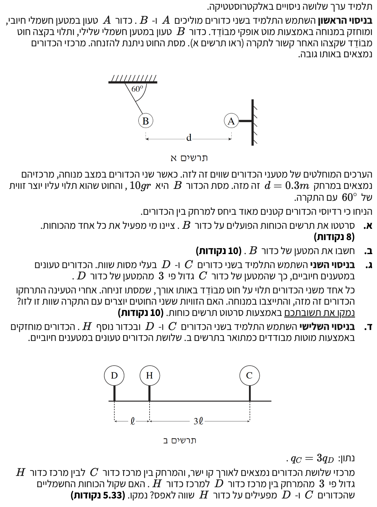

פתרון מלא: חשמל ואלקטרוסטטיקה
בגרות בפיזיקה 2009 - שאלה 1
שאלת בגרות המשלבת כוחות חשמליים ושיווי משקל (רמת 5 יח"ל)
עודכן:
--- --:--:--
נתוני בסיס וקבועים מהדף
נשתמש בערכים הבאים מתוך דף הנוסחאות לצורך פתרון השאלה:
\( g = 10 \text{ m/s}^2 \)
\( k = 9 \cdot 10^9 \text{ N m}^2/\text{C}^2 \)
הערה: כל תאוצת כובד תיקבע כחיובית או שלילית בהתאם למערכת הצירים שתיבחר בכל סעיף.

[תמונת השאלה המקורית]
לא נמצאה תמונה בשם question-image.png באותה תיקייה.
מה נתון: כדור B טעון במטען שלילי, בעל מסה \( m = 10\text{g} \). הוא קשור לחוט היוצר זווית של \( 60^\circ \) עם התקרה. הכדור נמצא במנוחה (שיווי משקל).
המרת יחידות (MKS): \( m = 10 \text{ g} = 0.01 \text{ kg} \).
מה מחפשים: לשרטט תרשים כוחות (FBD) הפועלים על כדור B, ולציין איזה גוף מפעיל כל כוח.
נוסחאות ועקרונות:
\( \Sigma \vec{F} = m\vec{a} \)
ניתוח ובניית התרשים:
מאחר והמערכת במנוחה, התאוצה היא אפס. על פי החוק הראשון של ניוטון, שקול הכוחות שווה לאפס (\( \Sigma \vec{F} = 0 \)). הכוחות הפועלים על כדור B הם:
- כוח כבידה \( m\vec{g} \): פועל כלפי מטה. מופעל על ידי כדור הארץ.
- כוח מתיחות החוט \( \vec{T} \): פועל לאורך החוט, בכיוון מעלה ושמאלה. מופעל על ידי החוט.
- כוח חשמלי \( \vec{F}_E \): פועל אופקית ימינה. כיוון ש-B שלילי ו-A חיובי, קיים כוח משיכה (נמשך ימינה ל-A). מופעל על ידי כדור A.
מסקנה: השרטוט מציג את שלושת הכוחות \( mg \), \( T \), ו-\( F_E \) עם כיווניהם.
טיפ מורה:
שימו לב לבחירת מערכת הצירים! הכי נוח לבחור ציר y אנכי וציר x אופקי. זכרו תמיד שזווית הנתונה עם התקרה (60 מעלות) שווה לזווית המתחלפת עם הציר האופקי למטה בנקודת תליית הכדור. נשתמש בזה בסעיף הבא.
מה נתון:
הערכים המוחלטים שווים: \( |q_A| = |q_B| = q \).
מרחק בין המרכזים: \( d = 0.3 \text{ m} \).
זווית החוט עם האופק: \( \alpha = 60^\circ \).
מה מחפשים: את גודלו וסימנו של המטען \( q_B \).
נוסחאות מהדף:
\( \Sigma F_x = 0 \)
\( \Sigma F_y = 0 \)
\( F_E = k \frac{|q_1 \cdot q_2|}{r^2} \)
חישוב:
שלב 1: שיווי משקל בצירים
נרשום את משוואות הכוחות בפירוק לרכיבים (ציר x ימינה, y מעלה):
\[
\begin{aligned}
\text{y-axis: } & T \sin(60^\circ) - mg = 0 \implies T \sin(60^\circ) = mg \\
\text{x-axis: } & F_E - T \cos(60^\circ) = 0 \implies T \cos(60^\circ) = F_E
\end{aligned}
\]
שלב 2: חילוץ הכוח החשמלי
נחלק את המשוואות כדי לבטל את המתיחות T:
\[
\frac{T \sin(60^\circ)}{T \cos(60^\circ)} = \frac{mg}{F_E} \implies \tan(60^\circ) = \frac{mg}{F_E}
\]
נציב \( mg = 0.01 \cdot 10 = 0.1 \text{ N} \) ונחלץ:
\[
F_E = \frac{0.1}{\tan(60^\circ)} = \frac{0.1}{\sqrt{3}} \approx 0.0577 \text{ N}
\]
שלב 3: חוק קולון
נציב בחוק קולון (כאשר \( q_A \cdot q_B \) בערך מוחלט שווה ל-\( q^2 \)):
\[
0.0577 = 9 \cdot 10^9 \cdot \frac{q^2}{0.3^2} \implies q^2 = \frac{0.0577 \cdot 0.09}{9 \cdot 10^9}
\]
\[
q = \sqrt{5.77 \cdot 10^{-13}} \approx 7.60 \cdot 10^{-7} \text{ C}
\]
מסקנה: היות וכדור B שלילי, מטענו הוא \( q_B = -7.60 \cdot 10^{-7} \text{ C} \).
זהירות, מלכודת מתמטית!
חוק קולון בדף הנוסחאות נותן את גודל הכוח בערכים מוחלטים. אין להציב סימני מינוס בתוך הנוסחה לפני הוצאת שורש, אחרת תקבלו שגיאת מתמטיקה. את סימן המטען קובעים בסוף מתוך הבנת הפיזיקה (משיכה/דחייה).
מה נתון: כדורים C ו-D. מסות שוות \( m_C = m_D \). מטענים חיוביים, \( q_C = 3q_D \). חוטים באותו אורך.
מה מחפשים: לקבוע האם הזוויות שוות, ולנמק באמצעות FBD.
נוסחאות ועקרונות:
החוק ה-3 של ניוטון
\( \Sigma \vec{F} = 0 \)
ניתוח המערכת:
על אף שהמטענים שונים, לפי החוק השלישי של ניוטון, הכוח החשמלי ש-C מפעיל על D שווה לכוח ש-D מפעיל על C: \( F_{CD} = F_{DC} = F_E \).
כמו כן, המסות שוות ולכן גם כוחות הכבידה שווים (\( mg \)).
פיתוח המשוואות כפי שעשינו נותן לכל כדור:
\[
\tan(\alpha_C) = \frac{mg}{F_E} \quad , \quad \tan(\alpha_D) = \frac{mg}{F_E}
\]
מסקנה: מאחר וביטויי הכוחות זהים, הזוויות שהחוטים יוצרים שוות לחלוטין זו לזו.
קונספט קריטי!
תלמידים רבים טועים לחשוב שהמטען הגדול יותר "דוחף חזק יותר". כוח חשמלי הוא אינטראקציה הדדית. שני המטענים משתתפים יחד במכפלה \( q_1 \cdot q_2 \), ולכן הכוח על כל אחד מהם תמיד זהה בגודלו לחברו.
מה נתון: כדורים D, H, C על קו ישר אחד.
המרחק C ל-H הוא \( 3l \). המרחק D ל-H הוא \( l \).
\( q_C = 3q_D \), כולם חיוביים.
מה מחפשים: לקבוע האם שקול הכוחות ש-C ו-D מפעילים על H שווה לאפס ולנמק.
נוסחאות ועקרונות:
עקרון הסופרפוזיציה
\( F_E = k \frac{q_1 \cdot q_2}{r^2} \)
חישוב הכוחות:
הכדורים החיוביים דוחים את H משני הצדדים. נחשב את הגודל של כל כוח:
\[
F_{DH} = k \frac{q_D \cdot q_H}{l^2}
\]
\[
F_{CH} = k \frac{q_C \cdot q_H}{(3l)^2} = k \frac{3q_D \cdot q_H}{9l^2} = \frac{1}{3} \cdot \left( k \frac{q_D \cdot q_H}{l^2} \right)
\]
רואים בבירור כי הכוח מצד D גדול פי 3 מהכוח מצד C (\( F_{DH} = 3 \cdot F_{CH} \)).
מסקנה: לא, שקול הכוחות אינו שווה לאפס אלא פועל ימינה, בגלל שהכוח מצד D חזק יותר.
דגש פדגוגי:
מדוע הגדלת המטען פי 3 לא פיצתה על ההרחקה פי 3? מכיוון שהכוח החשמלי תלוי בריבוע המרחק. הגדלת המרחק מחלישה את הכוח פי 9, בעוד שהגדלת המטען מחזקת אותו רק פי 3. חוק הריבוע ההפוך חזק יותר מהתלות הליניארית במטען.